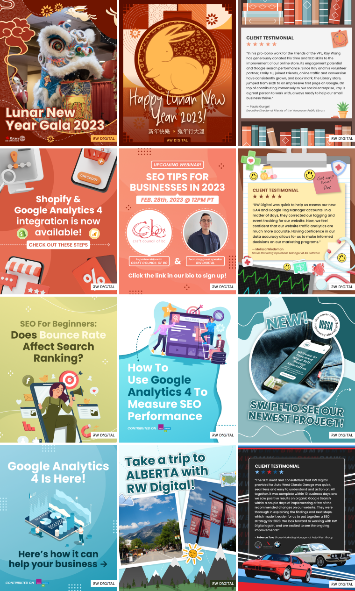

Since 2021, I've been part of RW Digital's team as a graphic designer who focuses primarily on managing the agency's social media feeds. I create graphics for services the agency provides, educational posts on digital marketing topic, client project showcases, and highlight events in the Richmond community. Additionally, I collaborate with the agency Principal on client websites and strengthen the agency's brand through consistent application of branding guidelines.
A major component of my work with RW Digital involves designing graphics for social media usage,
specifically Instagram, LinkedIn and the agency's blog. Through these posts, the agency aims to
educate those interested in digital marketing by providing tutorials and updates on current trends,
analytics tools, and strategies for improved website performance. The graphics I create are intended
to simplify digital marketing topics for users of all skill levels and encourage a friendly approach
to what can be a complex field of analytics. Visually, all posts follow the branding guidelines of
RW Digital and ultilize the recommended colours/fonts/graphical styles to maintain
consistency.
Apart from digital marketing content, I also create graphics for events in the
Richmond community, promotional content for client projects, and celebratory posts for holidays. RW
Digital is proud to acknowledge the Asian community in Richmond, sharing cultural traditions and
celebrations that take place within the region. I have the priviledge of working on posts for annual
Chinese holidays, such as the Lunar New Year and Mid-Autumn Festival.

To view more of my work for RW Digital, visit the agency's Instagram page.
Collaborating alongside my mentor and agency Principal, I have worked on the following client websites: